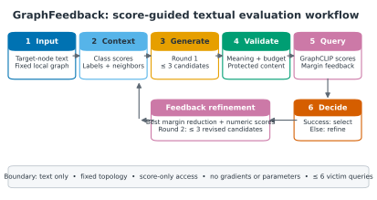
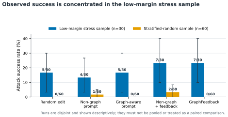
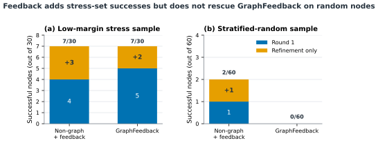

Generate
Up to three graph-aware candidates are proposed from the target text, class information, and compact one-hop context.
TEXT-ATTRIBUTED GRAPH ROBUSTNESS
GraphFeedback is a bounded, score-only procedure for testing whether semantically constrained edits to a target node can change a GraphCLIP prediction while graph topology remains fixed.
METHOD
Candidate generation, validity filtering, victim scoring, and refinement are separated so that each query and decision remains auditable.

Only the copied target-node representation changes; topology, neighbours, prompts, and victim parameters remain fixed.
Up to three graph-aware candidates are proposed from the target text, class information, and compact one-hop context.
Edits must satisfy length, protected-content, 20% token-change, and sentence-similarity constraints before querying GraphCLIP.
If Round 1 fails, observed scores and clean-class margin movement guide at most three local refinements.
EVIDENCE
The low-margin and random samples are disjoint and reported separately. Their contrast is the central empirical result.
Low-margin stress sample
7 / 30 GraphFeedback successesClass-balanced random sample
0 / 60 GraphFeedback successesReleased checkpoint
69.28% clean CiteSeer test accuracy

SUPPORTED INTERPRETATION
Score feedback can guide productive local search near selected decision boundaries. The current evidence does not establish population-level superiority of GraphFeedback or broad insecurity of GraphCLIP.
CONFERENCE-STYLE MANUSCRIPT
PROJECT RESOURCES